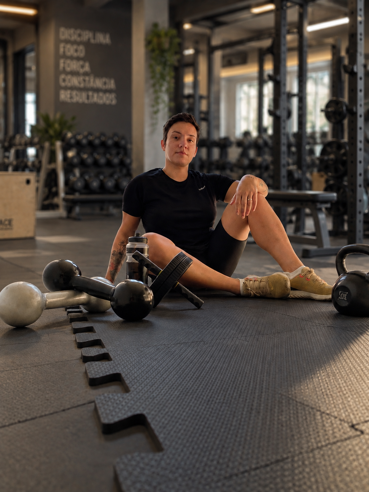
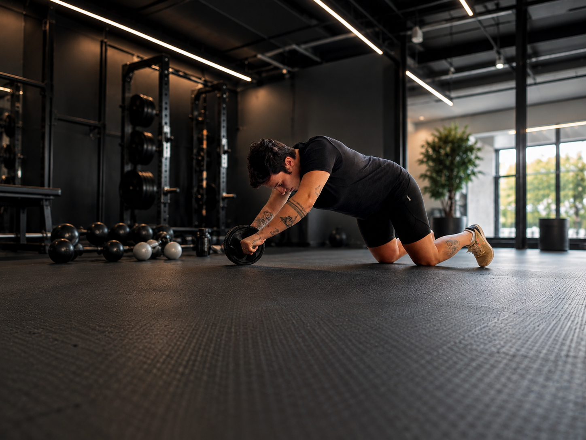
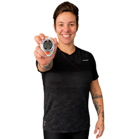

Treinos objetivos
Três sessões por semana, com aproximadamente 50 minutos cada.
UM PROGRAMA PARA MULHERES 35+
O VM35 é um programa de treinos online para mulheres que querem voltar a se exercitar com orientação, segurança e uma rotina possível de manter.
Conheça o VM35 ↗
VM35 significa Vida em Movimento 35+. É um programa pensado para mulheres de 35 a 55 anos que querem construir força, disposição e autonomia sem precisar organizar a vida inteira em torno do exercício.
Você recebe uma sequência de treinos progressivos pelo aplicativo. Cada etapa prepara o corpo para a próxima, respeitando seu momento, sua experiência e o tempo que realmente existe na sua rotina.
Três sessões por semana, com aproximadamente 50 minutos cada.
O treino evolui de forma gradual para você ganhar confiança e continuar.
Você escolhe a versão que melhor se encaixa na sua rotina.
Exercícios, séries e orientações organizados em um só lugar.
Se você se identifica com alguma dessas situações, o VM35 pode ser para você.
TALVEZ ESSA SEJA A SUA REALIDADE
COMO O VM35 TE AJUDA
Um passo a passo simples para você começar e evoluir com segurança.
Você responde um questionário para que o programa seja adequado ao seu momento.
Os treinos evoluem de forma gradual, respeitando seu corpo e os seus limites.
Você acessa os treinos em vídeos, com orientações claras, no celular ou tablet.
Ao longo do programa, você conta com o suporte da Amanda para tirar dúvidas.
Tudo o que você precisa para evoluir com equilíbrio, no seu tempo.
Sequências completas, com vídeos e orientações, que evoluem com você e respeitam a sua fase de vida.
Exercícios que melhoram sua postura, reduzem dores e ajudam você a se movimentar melhor no dia a dia.
Acompanhamento profissional, com explicações claras e um olhar cuidadoso para que você se sinta segura em todas as etapas.

MOVIMENTO COM PROPÓSITO
O exercício não precisa ser complicado. Precisa ser claro o suficiente para você conseguir continuar.
Mesmo programa. Mais resultados no tempo que faz sentido para a sua vida.
PLANO DE 3 MESES
R$ 69,90
PLANO DE 6 MESES
R$ 139,90
Os links definitivos do MFit ou Hotmart serão conectados antes da publicação.

Eu sou a Amanda Bolonhezi, Personal Trainer e criadora do VM35. Acredito que o exercício é uma ferramenta poderosa para que você se sinta bem hoje e viva com mais saúde, energia e autonomia no futuro.
Criei este programa para transformar conhecimento técnico em um caminho claro, seguro e possível de seguir — sem culpa, extremos ou promessas milagrosas.
Amanda Bolonhezi
Veja algumas das perguntas mais comuns sobre o VM35.
Não. O programa começa com uma etapa de adaptação e também foi pensado para quem está começando ou retomando a atividade física.
Sim. Você poderá escolher a proposta para casa ou para academia, de acordo com a sua rotina e com os recursos disponíveis.
Todos os treinos ficam organizados no aplicativo, com vídeos, séries e orientações para você acompanhar pelo celular ou tablet.
Informe suas condições na avaliação inicial. Assim, será possível orientar o melhor caminho e identificar quando uma liberação profissional adicional for necessária.
Sim. As orientações e dúvidas relacionadas ao programa são acompanhadas pela Amanda por meio do aplicativo.
MOVIMENTO
É HOJE
É AMANHÃ
É VOCÊ
MAIS SAÚDE
MAIS LIBERDADE
MAIS HISTÓRIAS
PARA VIVER
PROTÓTIPO
O botão do plano de 3 meses está pronto para receber o link do MFit ou Hotmart.